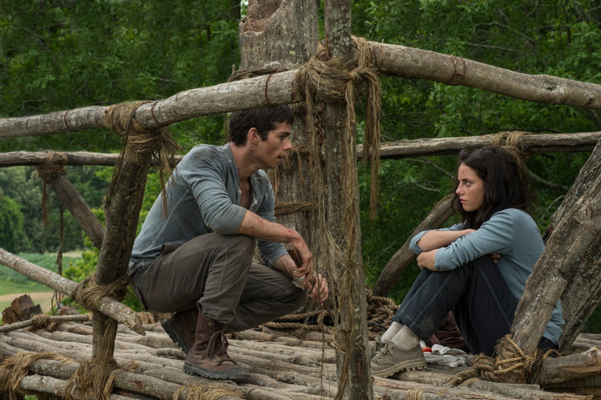
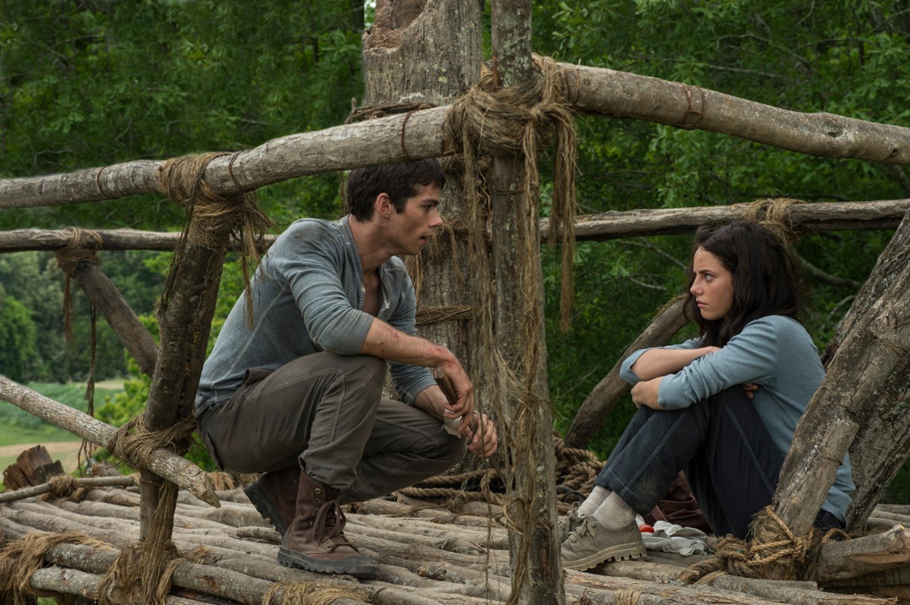

Леон
Краткое содержание фильма
Профессиональный убийца Леон неожиданно для себя самого решает помочь 12-летней соседке Матильде, семью которой убили коррумпированные полицейские.
Кадры из фильма


О фильме
| Год | 1994 |
|---|---|
| Страна | Франция, США |
| Жанр | боевик, триллер, драма, криминал |
| Режиссёр | Люк Бессон |
Век Адалин
Краткое содержание фильма
Адалин Боуман — столетняя молодая женщина 1908 года рождения. После автокатастрофы и поражения молнией в 1937 году она перестала стареть. Каждые десять лет она меняет личность, документы, работу и окружение. Неизменными спутниками для неё остаются только стареющая дочь, подруга — слепая пианистка, не знающая возраста Адалин, и десятая по счёту собака одной и той же породы. Однажды на праздновании Нового года Адалин встречает симпатичного молодого человека по имени Эллис, ради которого ей хочется перестать убегать.
Кадры из фильма


О фильме
| Год | 2015 |
|---|---|
| Страна | США, Канада |
| Жанр | драма, мелодрама, фентези |
| Режиссёр | Ли Толанд Кригер |
Бегущий в лабиринте
Краткое содержание фильма
Главный герой — подросток Томас, который просыпается в лифте, но ничего не помнит, кроме своего имени. Он оказывается среди других подростков, научившихся выживать в замкнутом пространстве. Раз в 30 дней прибывает новый мальчик. Группа ребят проживает в «Приюте» уже три года. Они кормятся тем, что удается вырастить на земле, и пытаются найти выход из лабиринта, окружающего их место жительства. Но однажды появляется девочка в состоянии комы...
Кадры из фильма

 

О фильме
| Год | 2014 |
|---|---|
| Страна | США, Великобритания |
| Жанр | фантастика, трмллер, приключения |
| Режиссёр | Уэс Боллр |